What is an oriented curve and how can we represent one algebraically?
What is the meaning of the line integral of a vector-valued function along a curve and how can we estimate if its value is positive, negative, or zero?
What are important properties of the line integral of a vector-valued functions along a curve?
As we discussed in Section 12.1, vector fields are often used to represent forces such as gravity or electromagnetism, as well as the velocity of movement for things like wind or flowing water. We learned in Section 9.3 that the dot product of a force vector and a displacement vector tells us how much work the force did on the object as it moved from the start of its displacement vector to the end. However, this calculation assumes that the force is constant in the region of movement and that the object moves in a straight line along the displacement vector. The situation is more complicated than a dot product calculation when an object’s movement is not in a straight line and when the force is not uniform throughout the area in which the object moves.
The preview activity uses cardinal directions to specify the direction of displacement vectors. These directions can be described by a compass rose. The compass rose given in Figure 12.2.1 is an example of a sixteen point rose. Note that directions like ESE are read as “east-southeast” half way between east and southeast.
Recall from Section 9.3 that the work done by a force \(\vF\) on an object that moves with displacement vector \(\vv\) is \(\vF\cdot \vv\text{.}\) In this Preview Activity, we consider the work done by wind on a helicopter at various stages of its journey.
(a)
Our intrepid pilot flies for some time and finds that they are 30 km from where they started at a heading of 20 ° degrees east of due north. During this portion of the trip, the wind is exerting a force of 100 N on the helicopter in the due east direction. Find the work the wind has done on the helicopter during the flight.
Here \(\vF = 100\vi\text{.}\) The displacement vector of the helicopter is \(\vv_1 = \langle 30\cos(70^\circ),30\sin(70^\circ)\rangle \approx \langle 10.261,28.191\rangle\text{.}\) Thus, the work done by the wind is \(\vF\cdot \vv_1 = 100\cdot 10.261 = 1026.1\text{.}\)
(b)
Our pilot sees a storm ahead and changes their direction. Some time later, the pilot determines that they are 25 km due north of where they previously checked thier position. The wind is still exerting a force on the helicopter of 100 N in the due east direction. Find the work done by the wind on the helicopter during the second part of the flight.
The displacement vector is \(\vv_2 = 25\vj\text{.}\) Thus, the work done by the wind is \(\vv_2 \cdot \vF =
0\text{.}\)
(c)
Find the helicopters’s displacement from its original position after the first two parts of its flight and use that to find the work done by the wind on the helicopter during the first two parts of flight.
The displacement is \(\vv = \vv_1 + \vv_2 = \langle 10.261, 53.191\rangle\text{.}\) The work done by the wind is thus \(\vv\cdot \vF = 1026.1\text{.}\)
It is the sum of the answers to the first two parts.
(e)
In order to get further away from the storm, the pilot turns and flies 45 ° west of due north for 50 km. The storm the pilot was avoiding has caused the wind to change as well. For this portion of the flight, the wind is exerting a force on the helicopter of 125 N in the south direction. Find the work done by the wind on the helicopter during this part of the flight.
The displacement vector is \(\vv_3 = \langle 50\cos(135^\circ),50\sin(135^\circ)\rangle = \langle
-35.36, 35.36\rangle\text{.}\) The work is therefore \(\vv_3 \cdot \vF = -4419.42\text{.}\)
(f)
Explain why you cannot take the total displacement of the three parts of the helicopter flight and calculate the total work done by the wind on the helicopter.
Given our motivation for calculating the work that a force field does on an object as it moves through the field, it is natural to concern ourselves with how the object moves. In particular, in many circumstances it will be different if an object moves from the point \((0,1)\) to the point \((4,3)\) by first going up the \(y\)-axis to \((0,3)\) and then moving horizontally to \((4,3)\) (illustrated by \(C_1\) in Figure 12.2.2) than if the object moves along the line segment from \((0,1)\) directly to \((4,3)\)(illustrated by \(C_2\) in Figure 12.2.2). Similarly, given a fixed force field, we would expect the work done to be different (in fact, opposite) if the object moves from \((4,3)\) to \((0,1)\) directly along a line segment (\(C_3\) in Figure 12.2.2). We say that a curve in \(\R^2\) or \(\R^3\) is oriented if we have specified the direction of travel along the curve. When a curve is given parametrically (including as a vector-valued function), our convention will be that the orientation follows from the smallest allowable value of the parameter to the largest.
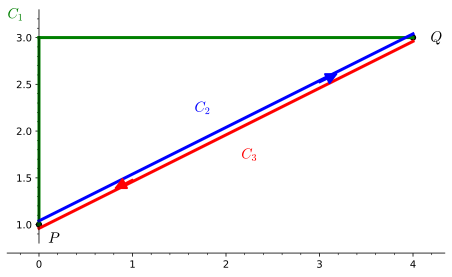
Figure12.2.2.Curves \(C_1\text{,}\)\(C_2\text{,}\) and \(C_3\) demonstrating different paths and orientations between \(P\) and \(Q\)
Activity12.2.2.
For each curve below, find a parametrization of the curve. Ensure that each curve’s orientation matches the one specified.
(a)
The line segment in \(\R^3\) from \((0,1,-2)\) to \((3,-1,2)\text{.}\)
The direction vector for the line segment is \(\vv = \langle 3-0, -1-1, 2-(-2)\rangle = \langle 3,-2,4\rangle\text{.}\) The line segment starts at \(\vr_0 = \langle 0,1,-2\rangle\text{.}\) Thus, the line segment given as the vector-valued function
The direction vector for the line segment is \(\vv =\langle 0-3, 1-(-1), -2-2\rangle = \langle -3,2,-4\rangle\text{.}\) The line segment starts at \(\vr_0 = \langle 3,-1,2\rangle\text{.}\) Thus, the line segment given as the vector-valued function
We can parametrize the circle in question in a clockwise direction as \(\vr(t) = \langle 3\cos(t),-3\sin(t)\rangle\text{.}\) To get the correct starting point, we require \(\pi/2\leq t \leq 5\pi/2\text{.}\)
(d)
In \(\R^2\text{,}\) the portion of the parabola \(y^2 = x\) from the point \((4,2)\) to the point \((1,-1)\text{.}\)
Here we can let \(y(t) = -t\) and \(x(t) = t^2\) for \(-2\leq t\leq 1\text{.}\)
In general, there are many ways to parametrize an oriented curve. With line segments, it is common to have the parameter range from \(0\) to \(1\text{,}\) although there are sometimes good reasons to choose another method. For circles and ellipses, you may find it useful to interchange the placement of \(\cos(t)\) and \(\sin(t)\) to change the orientation, but then careful attention will need to be paid to the start and end points. The interactive graph below allows you to plot parametric curves. You should experiment with the graph below and try to make sense of how different changes affects the graph below. Remember that you can change the highlighted point using the slider. You should take time now to at least try the following:
Change the upper bound of the plot to \(2 \pi\)
Exchange the sine and cosine functions in \(r_1\) and \(r_2\) (but do not change the coefficents)
Change the \(t\) in each of the component functions to \(-t\)
Change the \(-t\) to \(e^t\) (you will need to use the exp(t) function in Sage)
Change the upper and lower bounds to get the same curve plotted as in the earlier parts
Figure12.2.3.This is a plot of a parametric curve of the form \(\mathbf{r}(t)=\langle r_1(t),r_2(t),r_3(t)\rangle\text{.}\) For two-dimensional curves, put 0 for \(r_3(t)\text{.}\)
Subsection12.2.2Line Integrals
Preview Activity 12.2.1 showed how we can break up the work done along a path into a sum of work done on each piece. This will be a very helpful idea, especially if we consider the work done by a vector field that is not constant.
For example, let’s consider how to measure the work done by \(\vF\text{,}\) a vector field, along \(C\text{,}\) the curve show below that goes from \(P\) to \(Q\text{.}\)
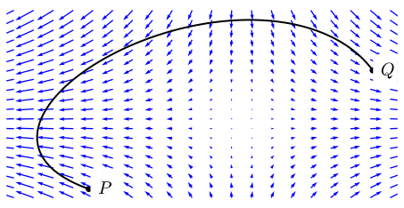
Figure12.2.4.A curve \(C\) oriented from the point \(P\) to the point \(Q\) with the plot of a vector field \(\vF\)
You can see that there will be parts of \(C\) such that the dot product of the direction of travel and the vector field will be positive and some parts where the dot product is negative. We don’t need to consider the output of the vector field except at the points on the curve. Thus, we will look at the following plot of the output of \(\vF\) at a collection of points on the curve \(C\text{.}\) Remember that when the vector field is plotted on the whole space, the lengths are rescaled to not be visually cluttered. In Figure 12.2.5 the actual output vectors are plotted for some points on \(C\text{.}\)
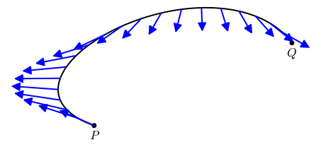
Figure12.2.5.A curve \(C\) oriented from the point \(P\) to the point \(Q\) with a vector field plotted at points along the curve
Since the output of \(\vF\) is changing as you move along the path, we will use type of argument that has come up repeatedly throughout our study of calculus involving integration. Here we will break our region up into smaller pieces to approximate the work done on each piece. Figure 12.2.6 shows how we can break \(C\) into \(n\) pieces, which we will call \(C_i\text{.}\) Note that \(C_i\) goes from the point \(\mathbf{r}_{i-1}\) to \(\mathbf{r}_{i}\text{.}\)
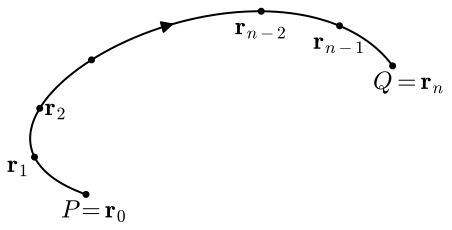
Figure12.2.6.A curve \(C\) oriented from the point \(P\) to the point \(Q\) broken into \(n\) pieces
If we look at one of these smaller pieces (as show in Figure 12.2.7), we can see that vector field still changes at these points, but the output vectors are very similar. We can also see that the vector \(\Delta \mathbf{r}_i= \mathbf{r}_i-\mathbf{r}_{i-1}\) is a good approximation of the curve piece \(C_i\text{.}\) Therefore we can approximate the work done by the vector field \(\vF\) on the piece \(C_i\) by \(\vF(\mathbf{r}_i)\cdot \Delta \mathbf{r}_i \text{.}\)
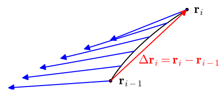
Figure12.2.7.A plot of the piece \(C_i\) with the output of our vector field plotted at six poins on \(C_i\)
As we increase the number \(n\) of pieces of \(C\) in our approximation and make sure the length of each \(C_i\) goes to zero, the vector field \(\vF\) will be nearly constant on each piece. Additionally, \(\Delta \mathbf{r}_i \) will be a better approximation of \(C_i\text{.}\) This means that our approximation with \(n\) pieces of \(C\) would be
We can calculate the exact amount of work done by \(\vF\) over \(C\) by taking the limit of this approximation as the number of pieces increases, while ensuring the size of each piece goes to zero. This should be a familiar Riemann sum argument from earlier definitions involving integration.
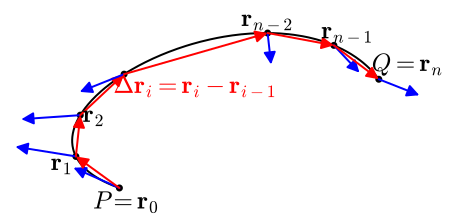
Figure12.2.8.A curve \(C\) oriented from the point \(P\) to the point \(Q\) broken into \(n\) pieces with the output of \(\vF\) plotted at each intermediate point
Definition12.2.9.
Let \(C\) be an oriented curve and \(\vF\) a vector field defined in a region containing \(C\text{.}\) The line integral of \(\vF\) along \(C\) is
We are able to say a bit here about conditions that guarantee the limit in Definition 12.2.9 exists. First, we require that \(C\) is a relatively “nice” curve. We say that a curve is smooth provided that it can be parameterized with functions that are infinitely differentiable. We do not require that \(C\) be smooth, but only that it be piecewise smooth, which means that \(C\) can be separated into parts which are indnividuall smooth. The other requirement is that \(\vF\) is a continuous vector field, by which we mean that each component function of \(\vF\) is continuous as a function of \(2\) or \(3\) variables.
Because the dot products in the definition of the line integral \(\int_C\vF\cdot d\vr\) can each be viewed as the work done by \(\vF\) as an object moves along the (very small) vector \(\Delta\vr_i\text{,}\) the line integral gives the total work done by the vector field on an object that moves along \(C\) (in the direction of its orientation).
If we are trying to determine how much a wind current helps or hinders an aircraft flying along a path determined by the curve, then calculating the dot product \(\vF(\vr_i)\cdot \Delta\vr_i\) makes sense for the local amount of help or hindrance. Note here that our vector \(\Delta\vr_i\) is the displacement from \(\vr_{i-1}\) to \(\vr_i\text{.}\) If the vector \(\vr_i\) and the force field vector \(\vF(\vr_i)\) point in directions with an acute angle between them, the dot product will be positive. 2 On the other hand, if the angle between them is obtuse, the dot product will be negative. In this case, we also note that the force field is hindering the aircraft’s progress. This interpretation carries through with our limit argument above. Specifically, the line integral over a curve will be positive if more of the vector field is in the direction of travel than against the direction of travel. You will need to consider the value of the dot product and not just the sign when assessing whether a line integral will be positive/neagtive/zero.
Activity12.2.3.
Shown in Figure 12.2.10 are two vector fields, \(\vF\) and \(\vG\) and four oriented curves, as labeled in the plots. For each of the line integrals below, determine if its value should be positive, negative, or zero. Do this by thinking about if the vector field is helping or hindering a particle moving along the oriented curve, rather than by doing calculations.
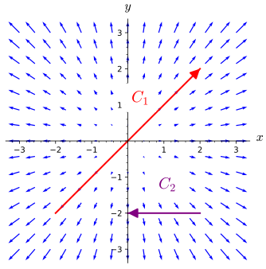(a)A plot of \(\vF\) with paths \(C_1\) and \(C_2\)
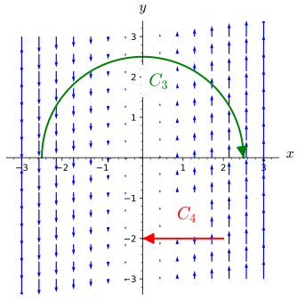(b)A plot of \(\vG\) with paths \(C_3\) and \(C_4\)
The portion of \(C_1\) that lies in the third quadrant is oriented in the opposite direction of the vector field. On the other hand, the portion of \(C_1\) in the first quadrant is oriented in the same direction as \(\vF\text{.}\) By symmetry, this forces \(\displaystyle\int_{C_1}\vF\cdot d\vr=0\text{.}\)
The angle between the vectors of \(\vG\) and \(C_3\) are all obtuse (except for \(x=0\text{,}\) where there is no angle), and thus the line integral is negative.
The vector field \(\vG\) is always orthogonal to \(C_4\text{.}\) Thus, the line integral is \(0\text{.}\)
The next several sections will be devoted to determining ways to efficiently calculate line integrals. As with the limits in the definition of every other type of integral we’ve studied so far, the limit in the definition of the line integral is is cumbersome to work with in most cases. However, in the case where the oriented curve \(C\) is composed of horizontal and vertical line segments, we can make a rather quick reduction to a single-variable integral, as the following example shows.
Example12.2.11.
Consider the constant vector field \(\vF(x,y) = \langle 2,1\rangle\text{.}\) Let \(C\) be the curve that follows the horizontal line segment from \((1,1)\) to \((4,1)\) and then continues down the vertical line segment to \((4,-2)\text{.}\)Figure 12.2.12 shows \(\vF\) and \(C\text{,}\) including the orientation. Calculate \(\displaystyle\int_C\vF\cdot d\vr\)
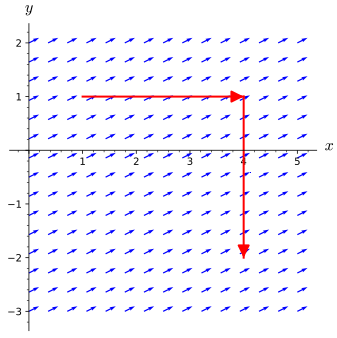
Figure12.2.12.An oriented curve from \((1,1)\) to \((4,-2)\) in a vector field \(\vF\text{.}\)
To calculate \(\int_C\vF\cdot d\vr\text{,}\) we start by working with the horizontal line segment. Along that part of \(C\text{,}\) notice that \(d\vr\approx \Delta\vr = \Delta
x\vi\text{.}\) Thus, the Riemann sum that calculates the line integral along this portion of \(C\) consists of terms of the form \(\langle 2,1\rangle\cdot (\Delta x \vi) = 2\Delta
x\text{.}\) Along this part of \(C\text{,}\)\(x\) ranges from \(1\) to \(4\text{,}\) and thus we can turn the Riemann sum here into the definite integral \(\int_1^4 2\, dx = 6\text{.}\) Since the vectors are generally pointing in a direction that agrees with the orientation of \(C\text{,}\) we are not surprised to have a positive value here.
Now we turn our attention to the vertical portion of \(C\text{.}\) Here \(d\vr \approx \Delta\vr = \Delta y\vj\text{,}\) which means that \(\vF\cdot d\vr\approx 1\Delta y\text{.}\) Hence, our Riemann sum can be calculated by the definite integral \(\int_1^{-2} 1\, dy = -3\text{.}\) Notice that the limits of integration here were set up to match the orientation of \(C\text{.}\) Also, the negative value should not be unexpected, since \(C\) is oriented in a direction for which the vectors of \(\vF\) point in a direction that would hinder motion along \(C\text{.}\)
Combining these two calculations, we find that \(\int_C
\vF\cdot d\vr = 6 - 3 = 3\text{.}\)
Subsection12.2.3Properties of Line Integrals
In Example 12.2.11, we implicitly made use of the idea that if \(C\) can be broken up into two curves \(C_1\) and \(C_2\) such that the terminal point of \(C_1\) is the initial point of \(C_2\text{,}\) then the line integral of \(\vF\) along \(C\) is the sum of the line integrals of \(\vF\) along \(C_1\) and along \(C_2\text{.}\) This is a generalization of the property for definite integrals 3 that tells us if \(c\in [a,b]\text{,}\) then
We next describe some common ways of breaking line integrals into pieces.
Convention12.2.13.Describing Paths in Line Integrals.
Before stating some useful properties of line integrals, we will establish some convenient notation. If \(C_1\) and \(C_2\) are oriented curves, with \(C_1\) from a point \(P\) to a point \(Q\) and \(C_2\) from \(Q\) to a point \(R\text{,}\) we denote by \(C_1+C_2\) the oriented curve from \(P\) to \(R\) that follows \(C_1\) to \(Q\) and then continues along \(C_2\) to \(R\text{.}\) Also, if \(C_1\) is an oriented curve, \(-C_1\) denotes the same curve but with the opposite orientation. The list below summarizes some other properties of line integrals, each of which has a familiar analog amongst the properties of definite integrals.
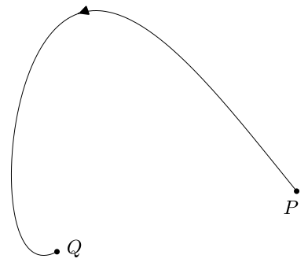(a)\(C_1\)
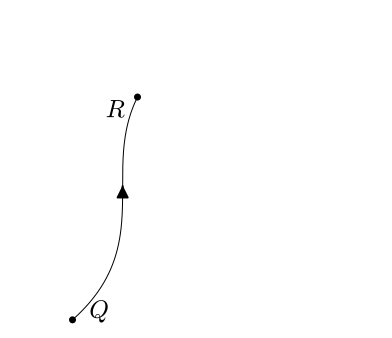(b)\(C_2\)
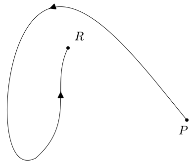(c)\(C_1+C_2\)
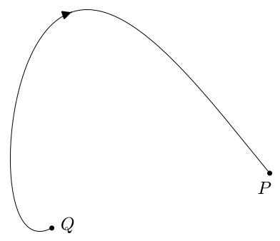(d)\(-C_1\)
Figure12.2.14.Plots of two oriented curves as well has the combination of them and one with the opposite orientation
Properties of Line Integrals.
For a constant scalar \(k\text{,}\) vector fields \(\vF\) and \(\vG\text{,}\) and oriented curves \(C\text{,}\)\(C_1\text{,}\) and \(C_2\text{,}\) the following properties hold:
The portion of the vector field that produces acute angles with \(C_6\) has smaller magnitude and smaller length than the portion that produces obtuse angles. Thus, the line integral must be negative.
(b)
Let \(C = C_1+C_2+C_3+C_4\text{.}\) Determine if \(\displaystyle\int_C\vF\cdot d\vr\) is positive, negative, or zero.
Notice that \(\vF\) is orthogonal to \(C_1\) and \(C_3\text{.}\) Thus, \(\displaystyle\int_{C_1}\vF\cdot d\vr = \int_{C_3}\vF\cdot d\vr = 0\text{.}\) Where the magnitude of the vectors in \(\vF\) is larger, \(\vF\) points in the opposite direction as the orientation of \(C\text{.}\) Thus, \(\int_C\vF\cdot d\vr\) is negative.
(c)
Order the line integrals below from smallest to largest.
Notice that \(\displaystyle\int_{C_4}\vF\cdot d\vr\) is the only one of the six line integrals that is positive, so it is the largest. Since \(\vF\) is orthogonal to \(C_1\) and \(C_3\text{,}\)\(\displaystyle\int_{C_1}\vF\cdot d\vr = \int_{C_3}\vF\cdot d\vr = 0\text{.}\) Note that while \(C_5\) is twice as long as \(C_2\text{,}\) the vectors in the vector field that are hindering \(C_2\) are more than twice as long as those hindering \(C_5\) Thus, \(\displaystyle\int_{C_2}\vF\cdot d\vr \lt \displaystyle\int_{C_5}\vF\cdot d\vr\text{.}\) Thus, the ordering is
If an oriented curve \(C\) ends at the same point where it started, we say that \(C\) is closed. The line integral of a vector field \(\vF\) along a closed curve \(C\) is called the circulation of \(\vF\) around \(C\text{.}\) To emphasize the fact that \(C\) is closed, we sometimes write \(\oint_C \vF\cdot d\vr\) for \(\int_C \vF\cdot d\vr\text{.}\) Circulation serves as a measure of a vector field’s tendency to rotate in a manner consistent with the orientation of the (closed) curve and is measured by looking at whether the vector field is working with or against the motion along the path.
Activity12.2.5.
Determine if the circulation of the vector field around each of the closed curves shown in Figure 12.2.16 is positive, negative, or zero.
The circular curve is oriented consistently with the vector field. Thus, the circulation is positive. The larger rectangular curve is either orthogonal to the vector field or oriented consistently with the vector field. Thus, the circulation is positive. The smaller rectangular curve is orthogonal to the vector field or has the opposite orientation. Thus, its circulation is negative.
Subsection12.2.5Summary
An oriented curve can be represented by a vector-valued function of one variable \(\vr(t)\) where we interpret the initial and terminal values of the domain of \(\vr\) as giving an orientation to the curve. A curve that ends at the same point where it started is said to be closed.
A line integral (of a vector field) measures the extent to which the vector field points in a direction consistent with the orientation of the curve.
Line integrals have many properties that are analogous to those of definite integrals of functions of a single variable.
The line integral of a vector field along a closed curve is called the circulation of the vector field along the curve.
Exercises12.2.6Exercises
1.
Find the line integral with respect to arc length \(\displaystyle \int_C (2 x + 8 y) ds\text{,}\) where \(C\) is the line segment in the \(xy\)-plane with endpoints \(P = \left(8,0\right)\) and \(Q = \left(0,2\right)\text{.}\)
(a) Find a vector parametric equation \(\vec{r}(t)\) for the line segment \(C\) so that points \(P\) and \(Q\) correspond to \(t = 0\) and \(t = 1\text{,}\) respectively.
\(\vec{r}(t) =\)
(b) Using the parametrization in part (a), the line integral with respect to arc length is
\(\displaystyle \int_C (2 x + 8 y) ds = \int_a^b\)\(dt\)
with limits of integration \(a =\) and \(b =\)
(c) Evaluate the line integral with respect to arc length in part (b).
\(\displaystyle \int_C (2 x + 8 y) ds =\)
2.
Suppose \(\vec{F}(x,y) = \langle e^x, e^y \rangle\) and \(C\) is the portion of the ellipse centered at the origin from the point \((0,1)\) to the point \((3,0)\) centered at the origin oriented clockwise.
(a) Find a vector parametric equation \(\vec{r}(t)\) for the portion of the ellipse described above for \(0 \leq t \leq \pi/2\text{.}\)
\(\vec{r}(t) =\)
(b) Using your parametrization in part (a), set up an integral for calculating the circulation of \(\vec{F}\) around \(C\text{.}\)
(c) Find the circulation of \(\vec{F}\) around \(C\text{.}\)
Circulation =
3.
Evaluate the line integral \(\int_C \mathbf{F}\cdot d\mathbf{r}\text{,}\) where \(\mathbf{F}(x,y,z) = -4x\mathbf{i} - y\mathbf{j} + 5z\mathbf{k}\) and C is given by the vector function \(\mathbf{r}(t) = \langle \sin t, \cos t, t \rangle, \quad \ 0\le t \le 3\pi/2.\)
4.
Let \(C\) be the path given below from \(P\) to \(Q\) with pieces \(C_1\text{,}\)\(C_2\text{,}\) and \(C_3\) as labeled. Let \(\vF\) be a vector field such that \(\int_C \vF\cdot d\vr = 9\text{,}\)\(\int_{C_1} \vF\cdot d\vr = 6\text{,}\)and \(\int_{C_3} \vF\cdot d\vr = 7\text{.}\)
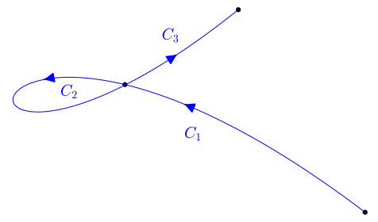
Figure12.2.17.An oriented path broken into three pieces
Subsection12.2.7Notes to Instructors and Dependencies
This section relies heavily on understanding vector fields from Section 12.1, understanding curves in space (from Section 9.6), and the work interpretation of the dot product from Section 9.3.
commons.wikimedia.org/w/index.php?curid=667281
We are abusing notation here a tiny bit, since technically the domain of \(\vF\) is points in \(\R^2\) or \(\R^3\text{,}\) and \(\vr_i\) is a vector. By \(\vF(\vr)\text{,}\) we mean \(\vF(r_1,r_2)\text{,}\) where \(\vr= \langle r_1,r_2\rangle\text{.}\)
![A vector field in the first quadrant with \(x,y\leq 5\text{.}\) Vectors are parallel to the \(y\)-axis and point in the negative \(y\)-direction. Vectors get longer as distance from the \(y\)-axis increases. There are six labeled oriented curves. The curve \(C_1\) is the line segment from \((3,3)\) to \((4,3)\text{.}\) The curve \(C_2\) is the line segment from \((4,3)\) to \((4,5)\text{.}\) The curve \(C_3\) is the line segment from \((4,5)\) to \((3,5)\text{.}\) The curve \(C_4\) is the line segment from \((3,5)\) to \((3,3)\text{.}\) The curve \(C_5\) is the lower half of the circle of radius \(1\) centered at \((3,2)\) oriented counterclockwise. The curve \(C_6\) is the line segment from \((1,1)\) to \((1,5)\text{.}\)](generated/sageplot/fig_12_2_field_practice.svg)
![A vector field with all vectors parallel to the \(y\)-axis. Vectors get longer as distance from the \(y\)-axis increases. Vectors with \(x>0\) point in the positive \(y\)-direction, while vectors with \(x\lt 0\) point in the negative \(y\)-direction. Also shown are two rectangles with sides parallel to the axes. One rectangle is oriented counterclockwise; its lower-left corner is at \((-2.25,-1.5)\) and its upper-right corner is at \((1,2.5)\text{.}\) The other rectangle is oriented clockwise; its lower-left corner is at \((-1.75,-3.2)\) and its upper-right corner is at \((1.5,-2.1)\text{.}\)](generated/sageplot/fig_12_2_circ_box.svg)